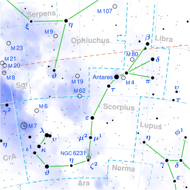
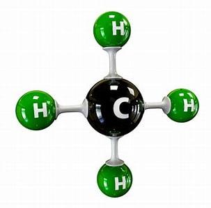

Antares
Iz Wikipedije, proste enciklopedije
Antares je najsvetlejša zvezda v ozvezdju Škorpjona in ena najsvetlejših na celotnem nočnem nebu. Poleg Aldebarana, Spike in Regula je ena izmed štirih najsvetlejših zvezd, ki ležjo manj kot 5° od ekliptike. Po barvi podoben Aldebaran leži skoraj neposredno nasproti Antaresu v živalskem krogu.
V primerjavi z našim Soncem, bi njen premer dosegel Jupitrovo tirnico. Masa zvezde je 15 do 18 Sončevih, njen izsev pa je 10.000 50.000 krat večji. Oddaljen je približno 600 svetlobnih let od Sonca in je dvozvezdje.
Ime izvira iz grščine in pomeni se drži nasproti Aresa (Marsa). Zaradi barvne podobnosti s planetom Mars so ga skozi zgodovino opazovali z zanimanjem. Po stari arabski tradiciji je Antares zvezda pesnika bojevnika Antare. Mnogo egipčanskih templjev je usmerjenih v smeri Antaresa.
Ker je Antares tako blizu ekliptike, ga lahko zakrije Luna in redko tudi kakšen planet. 17. novembra 2400 bo Antares zakrila Venera.

For zanka
For zanka je manj dovzetna za povzročanje neskončnih zank, zato ker si primoran določiti vse pogoje zanke v prvi vrstici.
Trije izrazi znotraj narekovajev nadzorujejo delovanje:
- prvi izraz določi začetno stanje. Tu lahko uporabljaš katerokoli spremenljivko, vendar je dogovor tak, da se pri zankah uporablja spremenljivka $i. Če je potreben več kot en števec, se pogosto uporabljata še spremenljivki $j in $k.
- drugi izraz je preizkus, ki določa, ali naj zanka nadaljuje z izvajanjem. Tu je lahko število, spremenljivka ali izraz, ki izračuna vrednost.
- tretji izraz pokaže pot skozi zanko. Večinoma želiš iti skozi zanko korak za korakom, tako da je primerna uporaba operatorja za povečanje za 1 (++) ali zmanjšanje za 1(--). Lahko pa uporabiš večje korake naprimer $i+=10.
Vir: www.medved.si
Methane (play /ˈmɛθeɪn/) is a chemical compound with the chemical formula CH4. It is the simplest alkane, and the principal component of natural gas. Methane's bond angles are 109.5 degrees. Burning methane in the presence of oxygen produces carbon dioxide and water. The relative abundance of methane makes it an attractive fuel. However, because it is a gas at normal temperature and pressure, methane is difficult to transport from its source. It is generally transported in bulk by pipeline in its natural gas form, or LNG (kratica: Liquified Natural Gas) carriers in its liquefied form; few countries transport it by truck.

 Znanje je zlata vredno
Znanje je zlata vredno